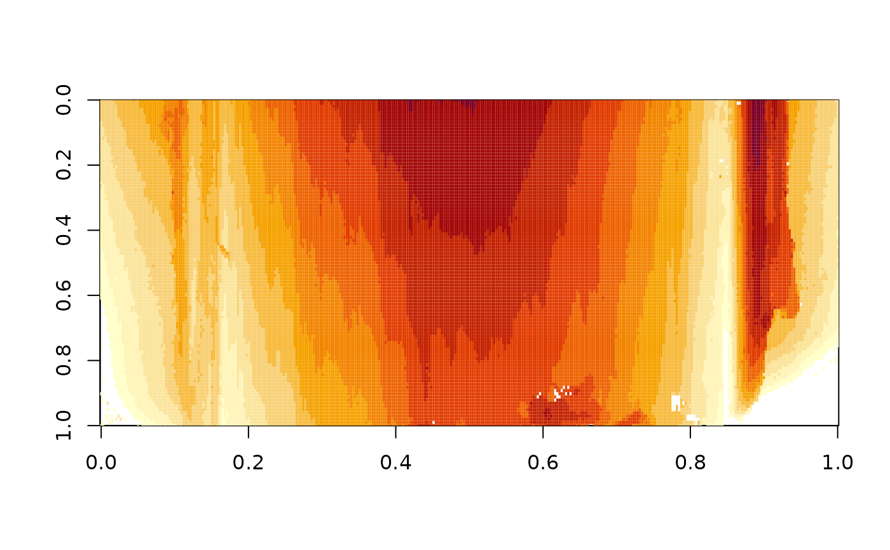

LEAs (land-engraved areas) are created on the outside of a bullet during the firing process. Depending on the rifling inside the barrel, multiple lands exist for each barrel. Striation marks in these land engraved areas are used in forensic labs to determine whether two bullets were fired from the same firearm.
Examples
data(lea)
image(lea)

if (interactive()) x3p_image(lea)